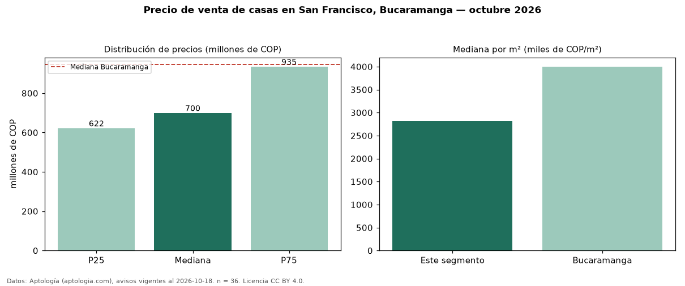

Precio de venta de casas en San Francisco, Bucaramanga — octubre 2026
Con 36 avisos vigentes, el precio mediano de casas en venta en San Francisco, Bucaramanga es COP 700 millones. Eso es 26 % por debajo de la mediana de Bucaramanga para casas (COP 945 millones). Por metro cuadrado, la mediana es COP 2,81 millones/m² (n = 35 avisos con área), 30 % por debajo de Bucaramanga (COP 4,00 millones/m²). Por precio mediano es el puesto 4 de 5 barrios de Bucaramanga con al menos 30 avisos de casas en venta (COP): entre las más económicas. El área mediana anunciada es 230 m². El segmento con más oferta es el de 3 o más habitaciones (31 avisos, mediana COP 700 millones). El estrato más frecuente es 4 (74 % de los avisos con estrato). La mitad central de los avisos va de COP 622 millones a COP 935 millones (razón 1,5), una dispersión moderada. Datos: Aptología (aptologia.com), CC BY 4.0 — https://www.aptologia.com/casas-en-venta/bucaramanga/san-francisco. Archivos: PDF, CSV con las cifras y gráfica PNG.

| Avisos únicos | 36 |
|---|---|
| Percentil 25 | COP 622.500.000 |
| Mediana | COP 700.000.000 |
| Percentil 75 | COP 935.000.000 |
| Mediana por m² | COP 2.812.500 |
Fuente: avisos vigentes de portales inmobiliarios recopilados por Aptología, deduplicados (mínimo 30 avisos únicos por celda). Precios pedidos, no cerrados. Fecha: 2026-10-18.